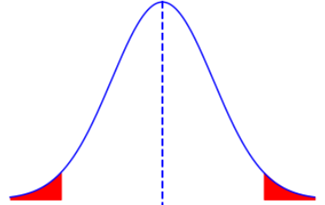
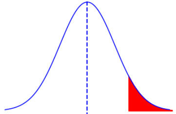
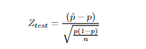

Confidence intervals are used to learn how much uncertainity there is for a parameter.It is an estimate of the interval between values. To do this estimations there are some concepts to learn first.
Confidence level(1-α):The level of certainity that the range estimate includes the population parameter.For example we can say %95 or %99 etc.
Significance level(α):The probability that the true value is outside the estimate range.FOr example the most commonly used is 0.05 and that equals %95 confidence level.
Error margin(e):It is the largest possible distance from the estimate covered by the confidence interval.For population mean interval calculation is x̄-e < μ < x̄+e
To calculate error(e) we will see three concepts in this section.
If;
n= number of data in chosen sample
x̄= sample mean
μ(mu)= population mean
α(alpha)= significance level
σ(sigma)= standard deviation for population
s= standard deviation for chosen sample
There are 3 formulas of error(e) for 3 seperate situations we will see in this section:
First situation; population mean interval calculation for known population variance.We will do the calculations with Z-table.
Second situation; population mean interval calculation for unknwon population variance and sample size>=30.We will do the calculations with Z-table.
Third situation; population mean interval calculation for unknwon population variance and sample size<30 .We will do the calculations with t-table.
So let's start off to calculations
Confidence interval formula: x̄-e < μ < x̄+e
Error(e) formula= Zα/2 x σ/√n
So confidence interval formula is= x̄-(Zα/2 x σ/√n)< μ < x̄+(Zα/2 x σ/√n)
In a sample taken from a group of 20 people average time spent on social media is 5 hours per day.If the population standard deviation is 30 minutes per 5 hours, find the confidence intervals for;
a) %90 confidene level
b) %95 confidence level
Solution a) x̄-[(Zα/2)x(σ/√n)]< μ < x̄+[(Zα/2) x (σ/√n)] ==> 5-[(1.645)x(0.5/√20)] < μ < 5+[(1.645)x(0.5/√20)]
Solution b) x̄-[(Zα/2)x(σ/√n)]< μ < x̄+[(Zα/2) x (σ/√n)] ==> 5-[(1.96)x(0.5/√20)] < μ < 5+[(1.96)x(0.5/√20)]
Confidence interval formula: x̄-e < μ < x̄+e
Error(e) formula= Zα/2 x s/√n
So confidence interval formula is= x̄-(Zα/2 x s/√n)< μ < x̄+(Zα/2 x s/√n)
In a sample taken from 45 person, average kilometers driven with a car daily is 50 kilometers.If the sample standard deviation is 10 kilometers, find the neighborhoods confidence interval for;
a) %90 confidene level
b) %95 confidence level
Solution a) x̄-[(Zα/2)x(s/√n)]< μ < x̄+[(Zα/2) x (s/√n)] ==> 50-[(1.645)x(10/√45)] < μ < 50+[(1.645)x(10/√45)]
Solution b) x̄-[(Zα/2)x(σ/√n)]< μ < x̄+[(Zα/2) x (σ/√n)] ==> 50-[(1.96)x(10/√45)] < μ < 50+[(1.96)x(10/√45)]
Confidence interval formula: x̄-e < μ < x̄+e
Error(e) formula= tα/2 x s/√n
For this calculation we will differ than other two by using t-statistic.I haven't show how to use t-table so you may need to look up for it in order to do the calculations on your own.
So confidence interval formula is= x̄-(tα/2 x s/√n)< μ < x̄+(tα/2 x s/√n)
In a sample taken from 10 houses in a neighborhood, yearly average income is 50k dollars.If the sample standard deviation is 5k dollars, find the neighborhoods confidence interval for;
a) %90 confidene level
b) %95 confidence level
Solution a) x̄-[(tα/2)x(s/√n)]< μ < x̄+[(tα/2) x (s/√n)] ==> 50-[(1.833)x(5/√10)] < μ < 50+[(1.833)x(5/√10)]
Solution b) x̄-[(tα/2)x(s/√n)]< μ < x̄+[(tα/2) x (s/√n)] ==> 50-[(2.262)x(5/√10)] < μ < 50+[(2.262)x(5/√10)]
Goal of hypothesis testing is to determine whether a claim about the population parameter is true or not by using sample data.So we have two hypotheses to try on every claim;
H0(Null Hyphotesis):Always claims that a parameter is equal(=) to a value.
H1(Alternative Hypothesis):As you can understand from the name alternative, H1 says that the value H0 claims is not correct(!= , < , >).
Generally our goal is to accept H1 while building a hypotesis.If we can't accept H1 we can build and try new hypothesis with new H0 and H1.
The parameters that we built our hypothesis on always has to be a population parameter not sample. e.g;
There is two kinds of hyptoheses as; one tailed and two tailed. Two-tailed means there is an exact value claimed in hypothesis.In one-tailed hypothesis we look for more or less than a value.
Example Hypotheses:
A school claims that the average grades of students are 80 out of 100.
This is a two-tailed hypothesis test.
H0: μ = 80
H1: μ != 80
A biologist claims that humans and chimpanzees have more than %97 similarity in DNA.
This is a one-tailed and right-tailed hypothesis test.
H0: p = .97
H1: p > .97
After we've built any hypothesis we can come down to two decision.One; we can reject H0, two; we can accept H0.But here is a question, either way, is there any possibility that our decision is wrong? Answer is of course, yes.
We can encounter 4 situations after we built our hypothesis.
So we have seen the beta(β) sign first time that means Type-II Error.While the H0 is wrong, our possibility to reject it means the power of test.Formula for power of test is= 1-β
As we have seen in confidence intervals, every test has its own formula.Our formula for this kind of test statistic is;
Ztest= [(p̂-p)/((√p x (√1-√p))/√n)]
__|p̂=sample proportion|___|p=population proportion|___|n=sample size|__
A traffic engineer claims that male drivers causes %70 of highway traffic incidents.Out of 50 randomly selected incident, 33 has reported as caused by a male driver. For α=.01 what is the test statistic and conclusion about this claim?
For α=.01 our critic region value should be α/2 because this is a two-tailed test.So Z.005 values are our critic region values and that equals 2.575
Solution [(p̂-p)/((√p x (√1-√p))/√n)] if applied ==> [(.66-.7)/((√.7 x (√1-√.7))/√50)]= -1.951 = Ztest
-Zcritic < Ztest < Zcritic so we cannot reject H0 and we have to accept H0 for α=.01 for current sample.